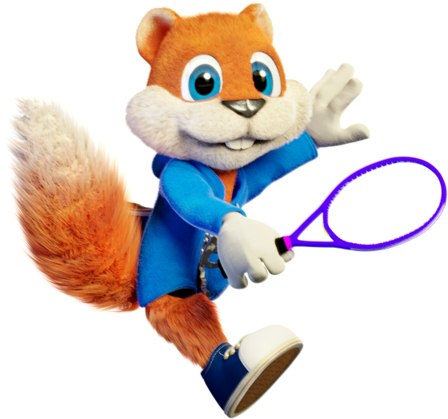
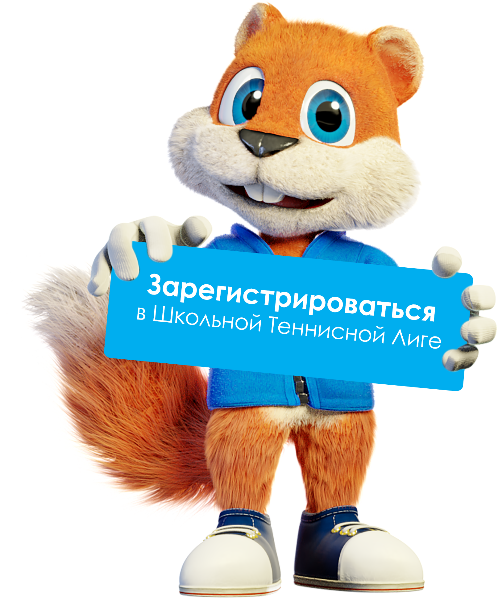

Школьная Теннисная Лига
Люлекин Дмитрий
Сооснователь
Школьной Теннисной Лиги
Действующий юниорский тренер
- « Мы верим в каждого из вас! Пускай этот путь запомнится вам яркими победами и верными друзьями! »
Зоркин Игорь
Сооснователь
Школьной Теннисной Лиги
Действующий юниорский тренер
- « Каждый новый этап, тренировка или соревнование - вызов самому себе. Достигайте новых вершин в окружении, которое развивает! »
Школьная Теннисная Лига
Школьная Теннисная Лига ориентирована на любительский уровень детей, занимающихся теннисом. Не у каждого ребенка есть возможность тренироваться по 2-3 часа 6 дней в неделю, однакокаждый юный спортсмен нуждается в среде, внутри которой он может соперничать, стремиться, развиваться, учиться и самосовершенствоваться!
Лига является своеобразной альтернативой, идущей бок-о-бок с профессиональной и в конце сливающейся с ней. Переходным звеном от новичка к профессиональному или же просто классному уровню игры в теннис.
Пока активные игроки выступают в Российском Теннисном Туре, дети, которые начали заниматься чуть позже, теперь также будут иметь возможность соревноваться на равных, иметь шансы на победу, чувствовать игру, чувствовать интерес и, что самое главное, оставаться в теннисе!
Что происходит
с детским теннисом в России
сегодня?
Существует федерация тенниса России, под эгидой которой проводятся все соревнования в РФ. Соответственно, все дети нашей страны играют в одной лиге.
Игроки, чьи родители решили сделать ставку на будущие победы в профессиональном туре и дивиденды, тренируются с утра до ночи и конкурировать с ними просто невозможно!
Внутренняя кухня тенниса устроена так, что до 18лет выигрывает тот ребенок, который проводит больше времени на корте.
Как вы думаете, интересно ли детям, которые начали игать в 10 лет, выступать на турнирах с детьми-профессионалами?
Конечно же, нет! Проиграв пару-тройку таких турниров, у детей вырабатывается защитная реакция от стресса, они не чувствуют отдачи от матча, не чувствуют шанса победить, не чувствуют мотивацию. Как следствие — потеря интереса и уход из тенниса.
Встречайте -
школьная теннисная лига
Мы комплексно подходим к развитию тенниса, спорта и детства в целом. Мы ставим своей целью создание целой экосистемы, в которой ребенок будет развиваться всесторонне, иметь мотивацию к действиям, увидит пути и цели, о которых раньше он даже не подозревал.
Организуя турниры под эгидой Школьной Теннисной Лиги, мы делаем ставку на качество проведения. Мы хотим, чтобы эмоции, полученные от участия в турнирах нашей Лиги, запомнились детям навсегда и спорт продолжал присутствовать во всех сферах их дальнейшей жизни. Ни один успешный человек не даст соврать, что физическая культура и спорт – неотъемлемая часть жизни всесторонне развитой, самодостаточной, культурной личности.
Мы в каждом ребенке видим личность. И развитие через спортивную деятельность может стать тем драйвером, который вдохновит ребенка на новые достижения. Мы считаем невероятно важным привить любовь к теннису юным спортсменам.
Большинство детей, занимающихся теннисом, не видят смысл в текущих тренировках. Теннис для них - место, куда ты пришёл, побегал и ушёл. У детей нет сопутствующих целей и вдохновения для роста своего мастерства и стремления к его совершенствованию.
«Зачем это нужно, что в этом интересного? Почему меня заставляют бежать быстрее, я ведь и так передвигаюсь? Зачем тренер просит согнуть ноги, это ведь сложнее, чем бить на прямых?» - вот примерные мысли детей, не играющих турниры на регулярной основе либо все время проигрывающих в слишком сильных (пока что) турнирах РТТ.
Как показывает практика, ребенка, по-настоящему почувствовавшего вкус победы, соперничества, принадлежности к своего рода спортивной суб-культуре, не нужно заставлять тренироваться.
Игрок сам начинает проявлять инициативу и задаёт вопросы тренеру, как ему улучшить свою игру, зачем и почему нужно подбегать к мячу именно так, а не иначе. Ребёнок начинает понимать зачем ему прыгать на скакалке, бегать кроссы и делать другие укрепляющие физические упражнения. У ребенка появляется цель, смысл пребывания на корте.
Большинство профессиональных спортсменов не имеют ярко-выраженного таланта. Даже далеко не все легендарные спортсмены были предрасположены к своему виду спорта. Это всё труд и тяжелая работа, которую невозможно выполнять бесцельно. На турнирах ШТЛ ребенок увидит эту цель, почувствует, что такое теннис на самом деле, что такое спорт на самом деле.
Наша миссия – создать систему, комплексно работающую на развитие детей, привлечение и удержание их в спорте. Помимо основной своей деятельности – организации и проведения детских теннисных турниров и фестивалей спорта, мы развиваем огромное количество комплексных направлений, таких как:
Рейтинг
Школьной Теннисной Лиги
По окончании турнира каждому игроку присваиваются очки, на основании которых выстраивается рейтинговая таблица. Мы составляем как личный рейтинг игроков, так и рейтинг образовательных учреждений.
Брендированная атрибутика
Школьной Теннисной Лиги
– одежда, браслеты, брелоки, виброгасители, наклейки, стикеры для социальных сетей и многое, многое другое. Дорогие родители, это – важно! Это очень важно, потому что энергия и мотивация к тренировкам, турнирам, развитию и достижению целей – она в мелочах, она в мелочах, которые окружают нас и детишек в частности каждый день. И если некоторые из этих мелочей будут напоминать юным спортсменам о тех эмоциях, которые они получают, тренируясь и участвуя в турнирах Школьной Теннисной Лиги, дети постоянно будут оставаться в строю.
Турниры
Школьной Теннисной Лиги
Наша Лига представлена 6 возрастными категориями:
5-8 лет Красный мяч
Детки данного возраста играют турниры по системе Теннис 10s красным мячом. Начальный уровень, самый большой по диаметру, самый медленный мяч из соревновательных. А также, мяч с самым низким отскоком.
7-10 лет Оранжевый мяч
Игры проходят на уменьшенной от полноразмерного корта по длине площадке. Средний уровень, быстрее красного и медленнее зеленого мяча. Высота отскока больше красного и меньше зеленого соответственно.
8-11 лет Зеленый мяч
Самый близкий к стандартному мячу уровень. Быстрее оранжевого и медленнее желтого мяча. Высота отскока больше, чем у оранжевого и меньше, чем у желтого соответственно.
Стандартный желтый мяч представлен тремя возрастными категориями:
9-12, 13-15, 14-18 лет
Стандартный теннисный мяч, которым играют на турнирах взрослые. Мяч с самой большой скоростью полета и самой большой высотой отскока.
Ограничения к участию в турнирах
Школьной Теннисной Лиги
В каждой возрастной категории ШТЛ действуют ограничения по размеру ракеток:
Возрастная
категория
Красный мяч 5-8 лет
Оранжевый мяч 7-10 лет
Зелёный мяч 8-11 лет
Желтый мяч
Играют дети
с размером ракетки
до 23 включительно
до 25 включительно
до 26 включительно
без ограничений.
Красный мяч 5-8 лет
до 23 включительно
Оранжевый мяч 7-10 лет
до 25 включительно
Зелёный мяч 8-11 лет
до 26 включительно
Желтый мяч
без ограничений.
Ограничения по рейтингу РТТ
К участию в турнирах ШТЛ не допускаются игроки с рейтингом 1-500 строчка РТТ в возрастной категории 9-10 лет РТТ для категорий «Оранжевый мяч» и «Зеленый мяч», а также игроки с рейтингом РТТ 1-700 строчка той возрастной группы, которой проходит турнир ШТЛ.
Например, если игрок желает участвовать в турнире Жёлтый мяч до 12 лет, он смотрит свой рейтинг РТТ в возрастной категории до 13 лет. Если этот рейтинг ниже 1-700 строчки, он может участвовать в турнире ШТЛ Жёлтый мяч до 12 лет.
Если же его рейтинг РТТ до 13 лет, к примеру, 650 строчка, то он не в праве играть турниры ШТЛ до 12 лет, однако, может сыграть турниры ШТЛ более старшей возрастной категории, так как в более старшей возрастной категории РТТ его рейтинг будет существенно ниже и сможет соответствовать вышеуказанным требованиям ШТЛ.
